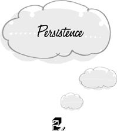

{% include JB/setup %}
{% raw %}
<div>

<h1 id="filepos15419" class="calibre19"><span class="calibre20"><span class="bold"><a class="calibre21"></a><a class="calibre21"></a></span></span></h1><div class="calibre16"> </div>
<p class="calibre22">                 <a class="calibre23"></a><a class="calibre23"></a>he first trap, <em class="calibre9">persistence</em>, is to continue to work on projects that have lost their value. The activity had meaning for us once—or we would never have begun. But the meaning has evaporated before we reach the end. Yet we go on, either because we don’t notice the change or out of sheer inertia.</p>
<p class="calibre22">We start a Monopoly game with great enthusiasm and—inevitably—get bored before we reach the end. But instead of quitting, we toil on without pleasure “just to get it over with.” There can be no clearer example of a waste of time.</p>
<p class="calibre22">Someone asks us to recall the name of a supporting actor in a B movie of the forties. It’s on the tip of our tongue, but we can’t quite come up with it. Meanwhile the person who wanted to know has departed from the scene. But her problem doesn’t depart with her. It bedevils us all day. Originally our aim was to answer someone’s question. But this aim isn’t what keeps us going now. Even the other’s death wouldn’t relieve us of our burden.</p>
<p class="calibre22"><a class="calibre23"></a>We start to watch a television show and soon realize that it’s hopelessly dull. Yet we watch it “to the bitter end,” complaining all the while about how awful it is.</p>
<p class="calibre22">We foolishly begin to sing “A Hundred Bottles of Beer on the Wall.” When we pass the eighty-five-bottle mark, we’re already sick of the enterprise. But we don’t quit. Instead, we sing faster and faster so that we may sooner come to the end.</p>
<p class="calibre22">In a political discussion, we conceive of a decisive but lengthy refutation of our opponent’s view. Halfway through our exposition, he announces that he’s convinced. We need say no more. Yet we tediously bring the argument to a superfluous conclusion.</p>
<p class="calibre22">We aren’t sufficiently impressed by the sheer peculiarity of actions like these.</p>
<p class="calibre22">What makes these activities mental traps is that they proceed without reference to our needs or interests. It doesn’t ordinarily give us pleasure to carry on with them to the bitter end. On the contrary, the too-long Monopoly game, the struggle to remember trivial information, and the awful television show are experienced as irritants. We’re impatient to be done with them, and <a class="calibre23"></a>relieved when they finally do come to an end. If there were a pill that could make us forget we were ever asked about the B-movie actor, we would gladly swallow it. Those who espouse the hedonistic view that we always act to maximize our pleasure would be hard put to explain phenomena like these.</p>
<p class="calibre22">Of course, we may persevere for values other than pleasure. We may finish a tedious Monopoly game in order not to disappoint a child. We may watch an awful show to the end because it’s our job to write a review. We may sing our way down to the last bottle of beer as an exercise in patience. Joyless perseverance is not always the trap of persistence. But most watchers of awful television shows are not critics, and most singers of “A Hundred Bottles of Beer” are not engaged in spiritual exercises. They’re accomplishing nothing, and not enjoying it.</p>
<p class="calibre22">Incredibly, our culture teaches us to regard persistence as a virtue. We boast that once we are set on a certain course, nothing can dissuade us from following it to the end. We teach our children that it’s a sign of weakness, even of immorality, to leave anything half-done. It’s undeniable that our affairs benefit greatly from the capacity <a class="calibre23"></a>to persevere in the face of adversity. But it’s quite another thing to suggest that this capacity should always and indiscriminately be exercised. A useful distinction may be drawn between <em class="calibre9">persistence</em> and <em class="calibre9">perseverance.</em> We persevere when we steadfastly pursue our aims despite the obstacles that are encountered along the way. But we merely persist if we doggedly carry on in directions that are known to lead to a dead end.</p>
<p class="calibre22">The moral imperative to finish everything we start is deeply ingrained. We find it difficult to abandon even the most transparently vapid enterprises in midstream. The mere act of beginning already binds us to continue to the end, whether or not the original reasons for the activity remain valid. We act as though we were bound by a promise—a promise made to no one but ourselves.</p>
<p class="calibre22">We begin to watch a television show solely for the sake of amusement. But a second motive enters the picture almost immediately: the need to complete what was begun. So long as we remain amused, this need can scarcely be felt. It’s a push in the direction we are already traveling. But its effect is noticed as soon as we lose interest in the show. Were amusement the only motive for watching, we would quit immediately. But the <a class="calibre23"></a>secondary motive to finish what was begun, just because it was begun, makes us persist.</p>
<p class="calibre22">Newton’s laws stipulate that a moving body will continue to move in the same direction until its inertia is overcome by other forces. It seems that we also obey a law of <em class="calibre9">mental inertia.</em> Having begun an activity, we are kept moving in the same psychological direction until we reach the end. As in the case of physical inertia, this impulse may be overcome by other tendencies. Not every Monopoly game is played out to the end. An earthquake, a sudden flood, or a full bladder will put a stop to all but the most stubborn cases of persistence. Even ordinary boredom may be strong enough to make us quit. But we must be more than a little bored, the emergency must be more than a little pressing, our bladder more than a little full. Inertia systematically tips the scale in favor of continuing with the task at hand regardless of the merits of the case. The result is that our decision to quit often comes a little too late.</p>
<p class="calibre22">It takes but a moment’s resolve to launch ourselves upon the vastest enterprises. Once we’re launched, however, we can’t simply cancel our plans with another momentary act of will. We’ve lost the “off” button.</p>
<p class="calibre22"><a class="calibre23"></a>We sometimes try to justify persistence by saying that we don’t wish our investment of time and energy to come to naught. If we quit the game now, our previous efforts to win will have been in vain. This line of thinking explains why an ongoing state of persistence becomes progressively more difficult to terminate. If we’ve completed only a few moves of a boring game, our investment is so small that we may write it off with little regret. But after several hours of grim and pleasureless play, it seems a shame not to go a little longer and finish up. So much effort will have gone to waste!</p>
<p class="calibre22">Of course this is a spurious argument. The pleasureless hours have <em class="calibre9">already</em> gone to waste. They won’t be redeemed by finishing up. It’s time to cut our losses and run. Paradoxically, our instinct for conservation leads only to more waste.</p>
<p class="calibre22">The absurd reluctance to let go of worthless things may even cause us to embark on activities that have no value right from the start. We may buy objects that are of no use to us because we can’t waste the opportunity of a sale, or eat when we aren’t hungry so that the food won’t have to be thrown out, or cart home junk from other people’s attics. This trap is a first cousin to persistence. <a class="calibre23"></a>Here we’re not caught in midstream by the disappearance of a previous value. What we do has no value from the moment we begin. For the sake of formal elegance, we may consider it to be a limiting case of the same trap. In this type of <em class="calibre9">instantaneous persistence</em>, it’s advisable to quit as soon as we start.</p>
<p class="calibre22">Boring games, awful shows, and sales on items we can’t use possess the happy property of coming to an end by themselves. Not all activities are self-terminating, however. A job, a marriage, or a habit is potentially forever. When an enterprise of indefinite duration loses its value, we may be plunged into a state of <em class="calibre9">perpetual persistence.</em> The mere passage of time will not deliver us from this trap. We’re in a Monopoly game that never ends.</p>
<p class="calibre22">We may perpetually persist at relationships that have turned irretrievably sour, jobs that hold no present satisfaction for us and no hope for the future, old hobbies that no longer bring us pleasure, daily routines that only burden and restrict our lives. Often we stay on a fruitless course simply because we don’t think to re-evaluate our goals. We’ve lived like this for so long—with this person, at this job, in this house and this <a class="calibre23"></a>neighborhood, wearing this style of dress, enacting these dietary and hygienic rituals in this particular order—that it no longer occurs to us that things could be otherwise. Our drab and hateful existence is taken to be an absolute condition imposed on us by fate, like the shape of our head. We may not like it, but there it is. If we stopped to ask ourselves whether we wish to continue along our present course, the answer might be crystal clear. Any amount of insecurity would be preferable to doing <em class="calibre9">this</em> for eight hours a day, five days a week, fifty weeks a year, until we die. But we don’t always ask ourselves. We complain, but we take the necessity of the status quo for granted. Hence we persist in the very patterns of behavior that sustain it. Since the option of quitting doesn’t present itself, the only alternative is to “get it over with,” like a tedious Monopoly game. Unfortunately, this tedious game constitutes our whole life.</p>
<p class="calibre22">Our unwillingness to abandon a bad situation may also stem from a belief that the alternatives are even worse. Perhaps we’ll starve if we quit our job. Our view of the matter may or may not be correct. In either case, this reason for staying on is not a mental trap. It’s the best choice we can <a class="calibre23"></a>make given our understanding of the situation. But we must watch out that we don’t use this type of argument to rationalize the sheer force of inertia. Sometimes we simply can’t change, although every indication cries out that we should. We feel compelled to stay on the same course just as we’re driven to finish the Monopoly game. So long as we remain conscious of our dilemma, there’s some hope that we will break out of the deadlock. Once we’ve neatly rationalized our situation as the best choice of a poor lot, however, it’s all over for us.</p>
<p class="calibre22">It’s particularly easy to fall into a perpetual case of <em class="calibre9">negative persistence.</em> Here we persist in <em class="calibre9">not</em> doing something that <em class="calibre9">would</em> be rewarding. We never open ourselves up to an intimate relationship because we did so once before with disastrous results. We never eat olives because we tried one twenty years ago and had to spit it out. We never tackle mathematical problems because we were terrible in math at school.</p>
<p class="calibre22">Not doing something is also a project without an end. We are never finished avoiding olives. These habits of omission are therefore liable to persist perpetually. In fact, they are <em class="calibre9">especially</em> liable to persist. It’s relatively easy to see when we should quit <em class="calibre9">doing</em> something, such as eating the <a class="calibre23"></a>same tasteless cereal every morning. We need only consult our experience. But how will we discover that it’s time to quit <em class="calibre9">not</em> doing something, such as avoiding olives? Perhaps we would enjoy them now if only we tried them. But so long as we negatively persist, there’s nothing in our experience to tell us so.</p>
<p class="calibre22">Negative persistence is the mental structure underlying many phobias. Having once had a bad experience in a large crowd, or driving along a mountain road, or speaking before an audience, we avoid the object of our distress forever after. The initial experience may have been due to a unique confluence of factors. Other crowds, other roads, other audiences, or even the same ones on another day may not have affected us at all. But because we avoid them all, we’re not in a position to find out. Of course this problem is further compounded by the fact that our expectation of panic tends to act as a self-fulfilling prophecy. But that’s another trap.</p>
<p class="calibre22">If we refrain from an activity, how are we ever to know that its value has changed? The only answer is not to give up on anything for all time to come. It’s a good idea to cast an occasional glance at what we have excluded from our <a class="calibre23"></a>life because it’s too distasteful, painful, or difficult. Unbeknownst to us, our tastes, our courage, our abilities, our luck, or the world itself may have changed. An annual nibble at an olive or an intimate relationship may pay off handsomely in the end.</p>  <div class="mbppagebreak" id="calibre_pb_8"></div></div>

{% endraw %}

